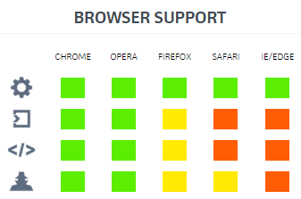

taller IV
introducción a los web components y polymer
1. ¿Qué va a suceder en el 2016?
Algunas pistas...
- material design de google
- sass (ie, bootstrap 4)
- módulos y bundleadores (de require a jspm)
- node++
- ¿arrancará angular 2.*
- ¿se forkeará angular 1.*?
- consolidación de npm y demás herramientas front
- ecmaScript 6 && babel
- pero, sobre todo, se hablará de web-components... o eso espero :P
2. ¿Qué es un web-component?
Una pieza encapsulada y autónoma de código html, css y js
demo
3. can i use?
ains... la tostadora

4. Algunas cuestiones prácticas
- Sus principales valores son la portabilidad
y la perdurabilidad
- Una curva (muy) alta de aprendizaje para crearlos
Hay que manejarse bien con html, css y js
- No son fáciles de hacer (el caso bootstrap)
- No se llevan bien con jQuery
- Son compatibles con los test
- Son compatibles con angular
4. Los 4 pilares
- templates
- custom-elements
- imports
- shadow dom